Kilka moich projektów
CodeMap
Edytor graficzny do tworzenia map kodu źródłowego.
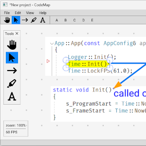Trex
Biblioteka C++ do renderowania czcionki, generowania atlasów i kształtowania tekstu.
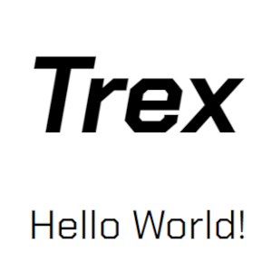LogAlligator
Bogata w funkcje aplikacje do przeglądania ogromnych plików z logami.
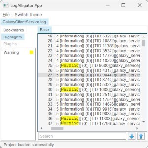tinyevents
TinyEvents jest biblioteką nagłówkową w C++ do generycznego systemu Event-Dispatch.
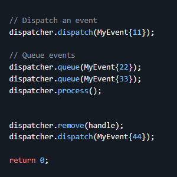Space Invaders
Gra przeglądarkowa napisana w czystym JavaScript z wykorzystaniem WebGL.
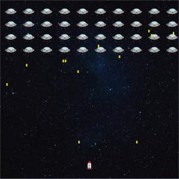Turtle 3D
Żółw znany z programu Logo, lecz tym razem w 3D. Wykorzystano czysty JavaScript i Canvas.
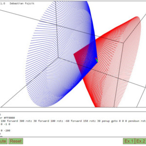Puzzle
Układanka, w której obrazek jest podzielony na części. Mamy ułożyć go z powrotem.
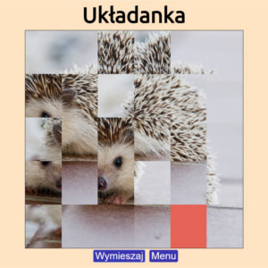The Damn Compiler
Kompilator języka imperatywnego, który kompiluje kod do abstrakcyjnego assemblera.
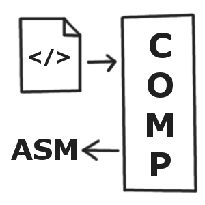Zrozumieć Wektory*
Gra logiczno-zręcznościowa, w której gracz bawi się wektorami i obserwuje, jak wpływają one na zachowanie piłeczki.


Arithmetic Coder
Wydajna implementacja algorytmu kompresjii kodowania arytmetycznego w C++.
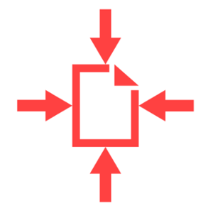pngsafe
Aplikacja ukrywająca plik w obrazie steganograficzną metodą modyfikacji najmniej znaczącego bitu.
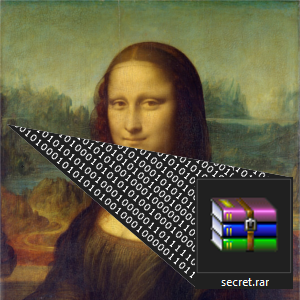EtherSim
Sandboxowy edytor topologii sieci komputerowej, w którym można symulować kolizje na łączu
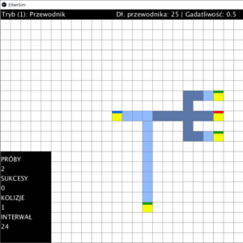Crypter
Konsolowa aplikacja do szyfrowania plików podanym przez użytkownika hasłem.
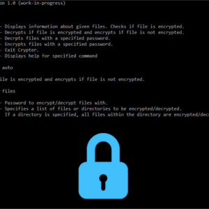Plotter3D
Aplikacja webowa do rysowania wykresów 3D funkcji dwóch zmiennych.
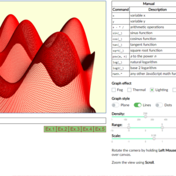* projekty realizowane w zespole